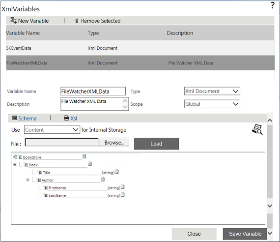

No
Creating XML Variable of Type 'XML Document'
To add a XML Document Variable:
- Click New Variable button in the XML Variable User Interface.
- Enter the following information:
- Variable Name: Enter the name of the variable.
- Type: Select XML Document from the drop-down list. This field defaults to XML Document. The XML Iterator type option is available only if another variable of XML Document type exists.
- Description:- Enter a description for the variable.
- Scope: Select the scope of the variable. The scope of the variable can be either Global or Local. Select Local, if the value of the variable is local to a workflow instance.
- Schema: Build the XML Schema. You can either build the schema or use the existing XML file to create the schema.
- Specify how the variable is to be used in Use for Internal Storage field. The field defaults to Content. To store as variable, select Variable in this field. If the scope of the variable is Global, you must set this field to Variable.
- Click Save Variable to save the new variable.
- Click OK to save the node properties.

See Also: Building XML Schema